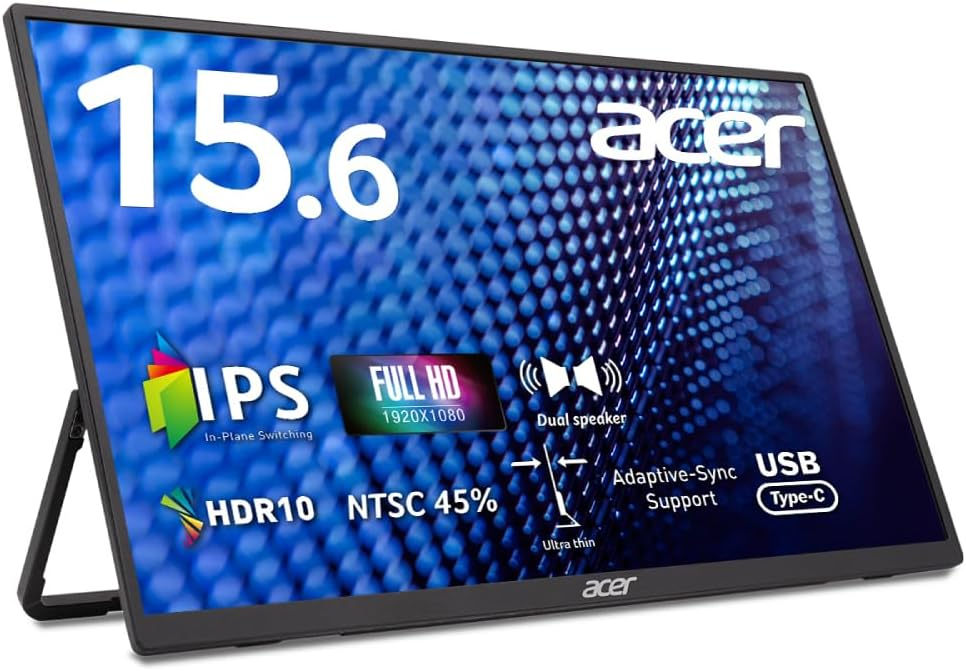
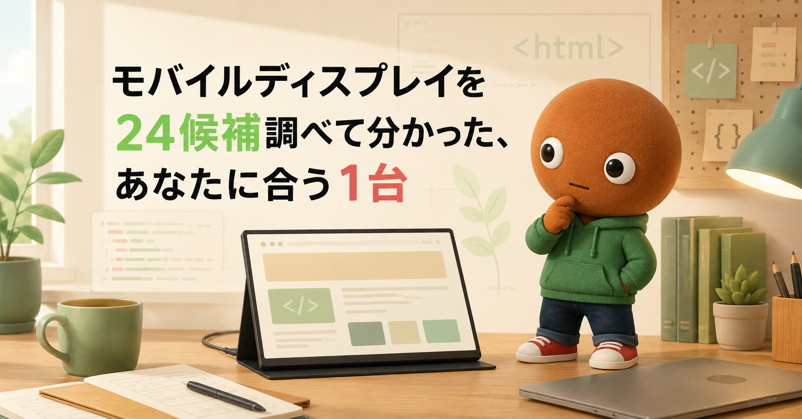
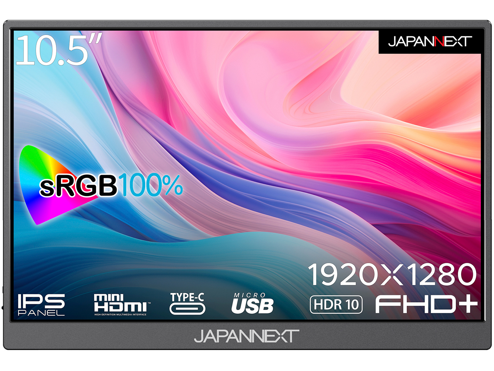
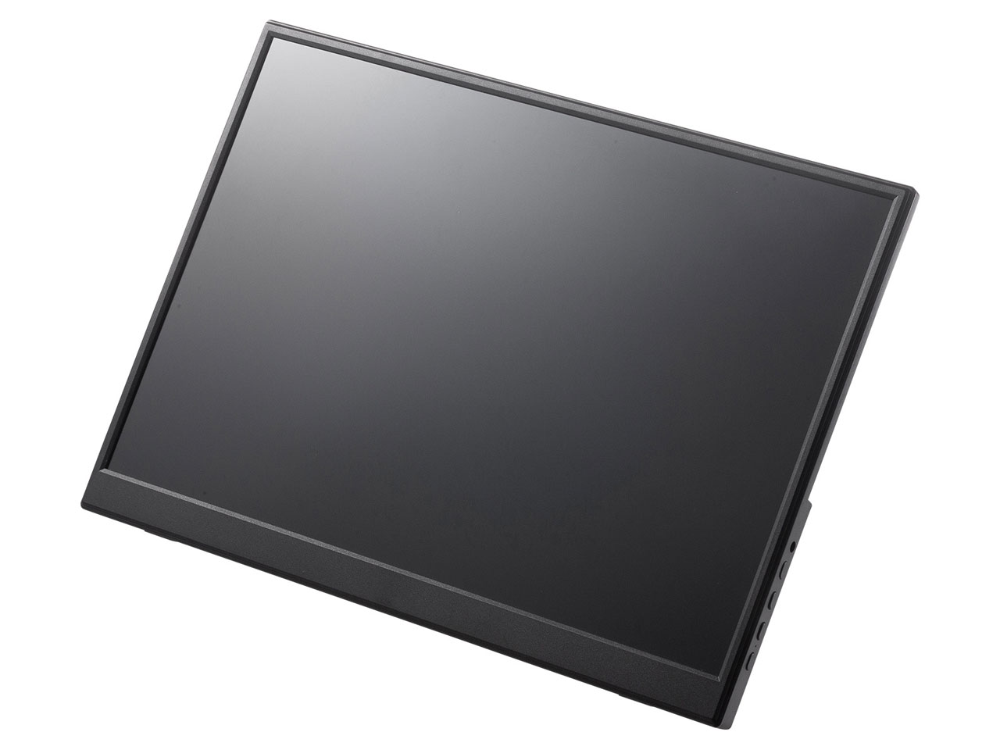
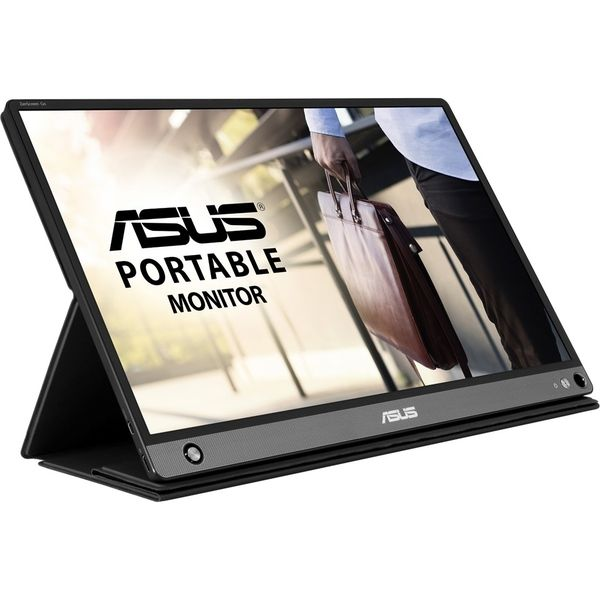
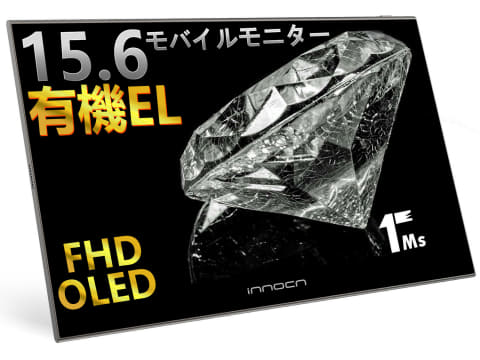
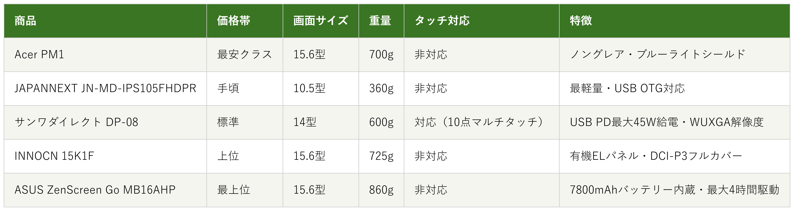

Amazonで見る出張先やカフェで、ノートPCの画面だけだと狭いと感じている人へ
モバイルディスプレイ24候補を調査。重さ・電源の確保しやすさから、選び方の違う5商品を比較しました。
自分に合うモバイルディスプレイを探す
この記事はAmazonアソシエイト・プログラムの参加者として、紹介料を得る場合があります（PR）。仕様は調査時点の情報です。
24候補から、選び方の違う5商品に絞りました。まずは気になる1台へ。向いている人・向いていない人と、低評価レビューもまとめています。
あなたの使い方に合う、1台を。

Amazonで見る
Amazonで見る
Amazonで見る
Amazonで見る
Amazonで見る横にスワイプして、5商品を見比べる
調べてわかったのは、基準はシンプルでした。
1つ目は「重さ」。出先に持ち歩くなら、数百グラムの差が毎日の負担になってきます。
2つ目は「電源の確保しやすさ」。バッテリー内蔵か、USB-Cケーブル1本で給電できるかで、使える場所が変わります。
価格帯には、かなり幅がありました。

価格帯・画面サイズ・重量・タッチ対応・特徴の比較（価格帯は最安クラス〜最上位の5段階）
選ぶ決め手とにかく安さを重視するなら、この1台です。
参考：価格.com・Amazonレビューを基にした低評価傾向の集約
Acer PM1
PM161QJbmiuux[15.6インチ]は、
5商品で一番手頃です。
重量は700gで、ノングレアパネルと
ブルーライトシールド、
フリッカーレスに対応しています。
接続端子はminiHDMI2.0×1、
USB Type-C×2です。
選ぶ決め手軽さを重視するなら、この1台です。
参考：価格.com・Amazonレビューを基にした低評価傾向の集約
JN-MD-IPS105FHDPR
[10.5インチ]は、
5商品で一番軽い、360gのボディです。
画面はフルHD+(1920×1280)、
sRGBの色域をフルカバーします。
USB Type-C×2、miniHDMI×1で、
USB OTGにも対応しています。
タッチパネルには対応していません。
選ぶ決め手タッチ対応を重視するなら、この1台です。
参考：価格.com・Amazonレビューを基にした低評価傾向の集約
DP-08[14インチ]は、
5商品の中で唯一、
10点マルチタッチに対応しています。
画面はWUXGA(1920×1200)、
非光沢のIPSパネルです。
重量600g、厚みは約1cmです。
USB Type-C(DP Alt Mode)は、
USB PDパススルーで
最大45Wの給電にも対応しています。
選ぶ決め手電源不要を重視するなら、この1台です。
参考：価格.com・Amazonレビューを基にした低評価傾向の集約
ZenScreen Go
MB16AHP[15.6インチ]は、
5商品で唯一、バッテリーを内蔵しています。
7800mAhのバッテリーで、
最大4時間駆動します。
厚さ9mm、重量860gです。
接続はUSB Type-C×1、
Micro HDMI×1です。
選ぶ決め手画質を重視するなら、この1台です。
参考：価格.com・Amazonレビューを基にした低評価傾向の集約
15K1F[15.6インチ]は、
5商品で唯一、
有機ELパネルを採用しています。
応答速度1ms、
DCI-P3の色域をフルカバーし、
コントラスト比は100,000:1です。
重量は約725g、
接続はminiHDMI×1、
USB Type-C×2です。
出張先やカフェで、ノートPCの画面だけだと狭いなと、私も感じることが増えてきました。
安いモデル、バッテリー内蔵、タッチ対応。種類が多すぎて迷います。なので今回、価格.comのモバイルディスプレイ検索やマイベストのランキング、各メーカー公式サイトを使って調査しました。
各商品ごとに、向いてる人・向いてない人も調べているので、自分に合ったモバイルディスプレイを探してみてください。
今回調べた24候補の中から、実際に選んだのは5つだけです。
Acer2機種・アイリスオーヤマ1機種・ASUS4機種・JAPANNEXT5機種・インベス1機種・iiyama1機種・EVICIV1機種・UPERFECT1機種・IODATA1機種・ARZOPA1機種・Lepow1機種・GeChic1機種・Green House1機種・KTC1機種・サンワダイレクト1機種・INNOCN1機種、という24候補です。
この中から、5つに絞りました。
JAPANNEXTの他4機種(7.8型・14型・15.6型)は、同じブランド内のサイズ違いにあたります。一番軽い10.5型のJN-MD-IPS105FHDPRを代表として採用し、残りは見送りました。
IODATAのLCD-CF161XDB-Mは、国内ブランドの安心感の軸でASUS・サンワダイレクトと重複し、最新の実売価格を確認できなかったため見送りました。
ARZOPAのZ1FCは、ゲーミング特化モデルで、今回のリモートワーク・出先作業向けの訴求とズレるため見送りました。
ASUSのZenScreen TouchMB16AMTRは、タッチとバッテリー内蔵を両立していました。重量1.15kgと価格の高さがあり、タッチ担当のサンワダイレクトとバッテリー担当のASUSの両方と役割が重複するため見送りました。
KensingtonのSD1600Pは、調べてみるとモニター本体ではなくUSB-Cのドッキングステーションだったため、対象外としました。
残りの候補も、サイズや重量帯が採用5商品のどれかと近く、見送りました。
上の24候補とは別に、サクラチェッカーが要注意・高リスクと判定した商品も3つ調べました。
個別レビュー本文の真偽までは検証できないため、機械的に検出された事実だけを正直に書きます。
AUZAIの15.6型モデルは、レビュー51件で、「怪しい日本語評価」「AIレビュー」「ギフト券評価」の指摘がありました。
ZFTVNIEの16インチモデルは、サクラ度「高リスク」判定でした。公式サイトが無く、製造国も推定表示でした。
KUMKの15インチモデルは、相場に対し52%の値下げが、価格の不自然さとして指摘されていました。
3つとも共通していたのは、公式サイトが無いか、価格が相場より極端に安いことでした。
24候補以上を比較していて、一番驚いたのは、「モバイル」の中にも役割の違いがはっきりあったことでした。
安さ重視のAcerと、バッテリー内蔵のASUSでは、重量差が160gしかありません。価格差は4倍近くありました。
もう1つの発見は、低評価の3商品がそろって「公式サイトが見当たらない」か「価格が相場より極端に安い」かのどちらかに当てはまっていたことです。
「安いから怪しい、高いから安心」とは限らないと、これまで調べた他のデスク周りグッズと同じことを実感しました。
ここまで読んでもまだ迷ったら、5商品で一番手頃で、ノングレアパネルとブルーライトシールドも備えたAcer PM1が最初の1台におすすめです。
まず1台試してみたい人にとって、価格を抑えつつ基本機能はしっかり押さえているので、外しにくい選択です。
Amazonで見る→Q. モバイルディスプレイは何を基準に選べばいい？
A. まず「重さ」で持ち歩きやすさを決め、次に「電源の確保しやすさ」を決めるのがおすすめです。
Q. USB-Cケーブル1本で映像と電源はまかなえる？
A. 今回の5商品は全てUSB Type-C接続に対応しています。バッテリー内蔵のASUS以外は、ノートPC側からの給電が前提です。
Q. iPadやSwitchにも使える？
A. USB-CやHDMIの入力に対応していれば使えることが多いです。購入前に、お使いの機種の出力端子を確認してください。
Q. 安いものと高いもの、何が違う？
A. 今回の5商品では、バッテリー内蔵・タッチ対応・有機ELパネルの有無が価格差につながっていました。